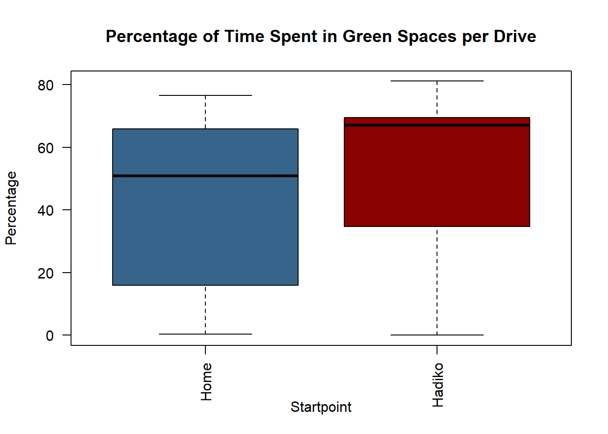

Detecting Speed and Route Deviations in Biking Data
Author
Tatiana Blumberg and Tanja Falasca
Abstract
This project analyzes bicycle riding patterns in Karlsruhe, Germany, using GPS data from the Strava app. The dataset, covering October 1, 2022, to June 1, 2024, includes 347,556 observations. Our focus is on regular commutes between the cyclist’s home and the Hans-Dickmann-Kolleg dormitory. Routes were extracted and assigned unique drive IDs based on time gaps between recordings.
Using R for data manipulation and spatial analysis, we compared route speeds and time spent in green areas. The hypothesis that rides back home take longer was confirmed, but rides back also unexpectedly involved more time in green areas. Various factors, including route preferences and environmental influences, are explored to explain these findings.
The study highlights the utility of combining GPS data with environmental information from OpenStreetMap for urban cycling behavior analysis. The findings provide insights for urban planning and policies to promote cycling as a sustainable transport mode. Challenges such as GPS inaccuracies and data processing issues are discussed, with suggestions for future improvements.
Introduction
This project aims to conduct a detailed movement tracking analysis, focusing on bicycle riding patterns within an urban environment. Specifically, this study examines data collected from Strava, a popular app used by cyclists to record their rides, which records the GPS points with a certain frequency. The app provides an opportunity to download the pooled data for a specific period but does not identify separate routes, which is one of the preprocessing steps in this project. We utilize R for data manipulation, spatial analysis, and visualization of our results.
For this project the data recorded in the city of Karlsruhe, Germany was used. This data was recorded by one of the team members, Tatiana (further “cyclist”), while she lived there. As we wanted to compare drives that are similar to each other, we opted for one of the regular and the most undertaken route. This is the way between her home and the Hans-Dickmann-Kolleg, the dormitory, where she used to live before and is still involved in many projects. For example, the dormitory has several bars, where the cyclist works from time to time or just visits. Moreover, there are several big festivals a year, in which she normally also takes part.
We studied the route and speed deviations between the ways from home to HaDiKo and back. We expected to encounter deviations in both cases. The initial assumption that on the way to the dormitory the cyclist would drive faster (as having more energy and, maybe, hurrying for the shift) and also spend more time in the green areas (mostly the Schlosspark, through which the fastest route lies) as in this direction she is likely to drive earlier in the day, while in the other direction she might hesitate on taking the forest route due to safety concerns.
Our research area is the spatiotemporal data analysis, as we consider both changes in GPS position and in the timestamps.
Material and Methods
In our research, we used biking data from the Strava app, collected between October 1, 2022, and June 1, 2024. The dataset contains 347,556 observations. To expedite the calculations, we initially tested the code on a smaller dataset with 21,459 observations collected between April 5, 2024, and April 14, 2024. This dataset includes variables such as timestamp, latitude, longitude, and elevation. During the drive, the GPS location is recorded every second, but if the cyclist pauses, the recordings are made less frequently. For the convenience of further calculations, we separated the timestamp into date and time. We were interested only in the routes taken between two specific points: Kriegsstraße 183, 76135 Karlsruhe, Germany (referred to as “home”) and Hans-Dickmann-Kolleg located at Klosterweg 28, 76131 Karlsruhe, Germany (referred to as “Hadiko”). To compare the routes, we first had to extract each drive and separate them in the dataset. To achieve this, any observation recorded more than 300 seconds after the previous one was counted as the start of a new drive. Each drive was then assigned a unique ID.
To filter out the drives between the two points of interest, we developed a function that created a buffer around the start and end points. The function then filtered the data based on the criteria to include only drives where the first recording falls within the start buffer and the last recording falls within the end buffer. Additionally, the function generated a plot illustrating the drives, the start and end points, and the created buffers to verify the accuracy of the results. Using this function, we filtered drives from “home” to “Hadiko” (“there”) and from “Hadiko” to “home” (“back”), using a buffer size of 500 meters. To gain a better overview of the study area, we created a bounding box around the relevant data points. By grouping the data using “group by”, we obtained a summary of how many routes exist in each category.
To relate the data to the environment, we extracted features stored in the Open Street Map, which we could access using the OpenStreetMap library in R. To get an overview of the roads, we extracted all the roads stored in the Highway key and created a road network from this data. To obtain the green spaces in our study area, we extracted the parks, forests, and lawns from the open data. The forests were stored in polygons and multipolygons in the tag:landuse=forest, with varying degrees of equality and sometimes overlapping. There was also an overlapping with the parks. As parks and forests within a city share a similar purpose, we merged these features to refer to them collectively as green spaces. We decided not to take the grass areas into account, as they often overlapped with forest and park areas and did not significantly interfere with our movement data. To obtain a good overview of the extracted features, we visualized them in the graphic below along with the movement data.
To compare biking routes with different starting points, we first calculated the duration of each route. We achieved this by creating a function in R that grouped the data by drive and then calculated the time difference between each GPS point in the group. Summing these time differences provided us with the total time each route took. To further compare the biking routes, we examined whether they differed in the time spent biking through green areas. We accomplished this by filtering the points located within green areas, grouping them by each drive, and then calculating the time spent in these areas using the same function we used for calculating the overall drive times. Since the number of biking routes varied for each starting point, we calculated the percentage of time spent in green areas for each route. This approach allows for a fair comparison of values across the different starting points.
Results
The duration per drive (see Figure 1) was longer for the routes from Hadiko to Home. Additionally, more time was spent in green areas by routes from HaDiKo to Home (see Figure 3). For this the mapmatching of the routes was done, with different colour corresponding to different environment categories, see Figure 2.
# Data from homeggplot() +geom_sf(data = street_network %>%activate(edges) %>%st_as_sf(), size =2, color ="lightgrey") +geom_sf(data = green_spaces, color ="darkolivegreen2", fill ="darkolivegreen2") +geom_sf(data = data_from_home, color ="steelblue1", size =0.4) +geom_sf(data = green_spaces_from_home, color ="steelblue4", size =0.4) +theme_void() +ggtitle("Drives from Home to Hadiko") +theme(plot.title =element_text(hjust =0.5)) +# Data from Hadikoggplot() +geom_sf(data = street_network %>%activate(edges) %>%st_as_sf(), size =2, color ="lightgrey") +geom_sf(data = green_spaces, color ="darkolivegreen2", fill ="darkolivegreen2") +geom_sf(data = data_from_hadiko, color ="brown1", size =0.4) +geom_sf(data = green_spaces_from_hadiko, color ="darkred", size =0.4) +theme_void() +ggtitle("Drives from Hadiko to Home") +theme(plot.title =element_text(hjust =0.5))
Figure 2: Mapmatching of the routes
Code
boxplot(green_spaces_from_home$percentage_green_space, green_spaces_from_hadiko$percentage_green_space,main ="Percentage of Time Spent in Green Spaces per Drive",las =2,col =c("steelblue4", "darkred"),ylab ="Percentage",xlab ="Startpoint",names =c("Home", "Hadiko"))

Figure 3: Time spent in green areas
Discussion
Results’ Interpretation
The time difference matched our expectations: the way there took on average more time than the way back. This could be explained that first the cyclist had more energy or had to hurry to the bar shift but on the way back she was tired and did not have any time pressure.
However, the second result turned out to be surprising. We expected the cyclist to spend less time in the forest on the way back since it was usually late at this point, and if returning alone, she would opt for the city area. Nevertheless, although, showing less discrepancy, the average time in the green areas for the way back was higher. We came up with several explanations for this phenomenon. First, since the way “back” took in general longer than “there”, this would also mean that, when opted for the forest route, the cyclist would also spend more time in it. Second, as it is shown on the visualisation, the cyclist several times took the city route on the way there (e.g. if it was already too dark to use the forest route or if she had to visit some places on the way). This could lead to the number of the forest routes “there” and forest routes “back” closer than expected. Third, during the recorded period, she did not necessary drive back alone, in which case the forest route was preferred as the fastest. Fourth, as shown on the visualisation, one of the roads lies next to a small green area, which was also counted as time spent in green due to the GPS imprecision, but only on the way back (since the road in the other direction is significantly further away from the park).
Challenges
We encountered some problems while trying to extract the routes. The initial idea was to find all the points recorded within the buffer and then choose the closest to the start/end points for every day. However, later we realised that due to imprecision of the GPS tracking, the closest point is not necessarily the first one and there might be several recordings per day starting at our “home” point, which made grouping by time pointless, so we switched to the first/last point per drive. We wanted to use the temporal criterion for matching “there” and “back” routes as well (both happening in the same day) but since there is a chance that the way “back” was recorded after midnight we had to abandon this idea. In the end we decided to give up the route matching at all and to compare the “there” and “back” groups as a whole. The decision was proven right when we found out that due to the measurement error (inconsistency) the number of recordings in the two categories did not match. The solution of the drive separation problem (5 minutes pause as a breaking point) does not seem to be ideal, as there is a chance of the cyclist making longer breaks still within one route which would result in us losing some drives while filtering. Finding the better alternative could be a subject of future work.
Further Steps
The work could be continued at a more detailed level. For instance, after identifying differences in the time spent in green areas for the outbound and return journeys, one could pair the outbound journeys with the corresponding return journeys and then compare these drives. This comparison could be conducted using similarity measures or by comparing the drives to the shortest possible route from the start to the endpoint, which could be calculated from the street network data we have already obtained in R with the shortest path function. Further, one could examine speed deviations during the drives and make assumptions about their nature by extracting additional features from OpenStreetMap. For example, one could investigate where the route deviates from the usual path and whether there are any pauses in the journey. To investigate the reasons for these pauses, one could check if the proximity to certain features, such as grocery stores or post offices, suggests that the deviation was made to do some shopping or send/receive a package.
From the speed perspective one could compute the average speed for every route in the dataset, then the average speed for the whole dataset and look at the drives that are deviating from it the most (1st and 4th quartile). Then one could search for similarities between the routes of one quartile (for example, whether the cyclist goes faster in specific locations or specific days of the week/time of the day. Alternatively, the end point of the route could be plotted on the map which would allow to make some assumptions. In case where, for instance, the speed is higher than average and the end point is a medical cabinet, one could assume that the cyclist was hurrying to an appointment).
The speed could also be compared within one drive if it is sufficiently long: did the cyclist keep the same speed all the time or was faster in the beginning and then got tired and lost the speed towards the end?
OpenStreetMap Data
OpenStreetMap provides a vast amount of openly accessible data contributed by a large number of non-commercialized users. Due to the varying levels of user experience, errors can occur in the data, and not all areas may be covered with the same amount of information (Sehra, Singh, and Rai (2013)). We encountered the challenge of inconsistency in OpenStreetMap while extracting greenspaces, due to the information being stored in different formats (polygons and multipolygons) and overlapping with each other. Addressing topology errors was also necessary during the process. Moreover, uncertainty remains regarding the completeness and accuracy of the data coverage. A further challenge was that occasionally, we encountered issues with a general Overpass server error when attempting to access this data. To address this problem, we stored the boundary data locally on our computers, ensuring continuous access to this data at any time. Nevertheless, OpenStreetMap proved invaluable as it facilitated easy access to environmental information, enabling us to analyse our data in relation to the environment effectively.
Artificial Intelligence
In this project, we used ChatGPT as inspiration when encountering errors in our code. We did not use ChatGPT to write the code and then simply copy-paste it, as our goal was to understand how our code functions. We also found that ChatGPT is effective in identifying careless mistakes but less effective in specialized R applications related to movement data. Additionally, ChatGPT and DeepL were used to check our written text for errors and improve the sentences, but not to generate the text itself.